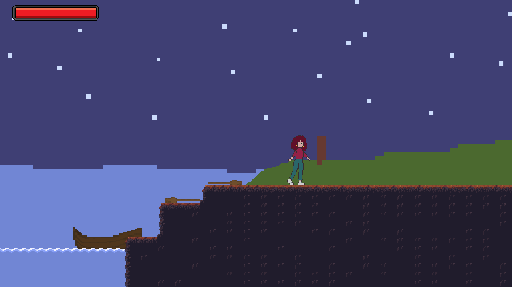
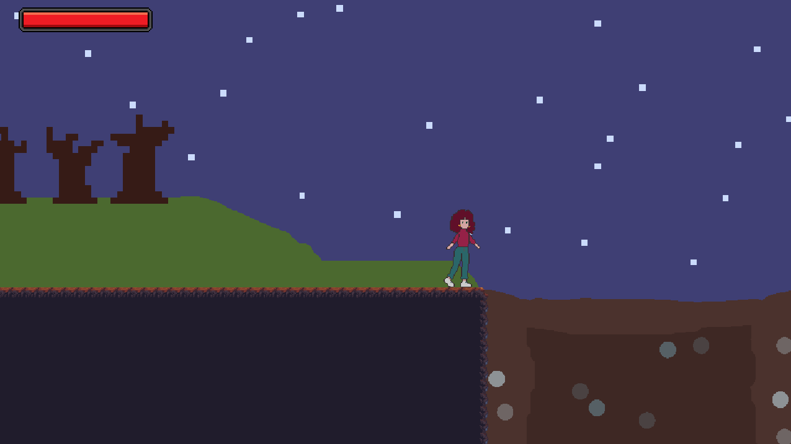
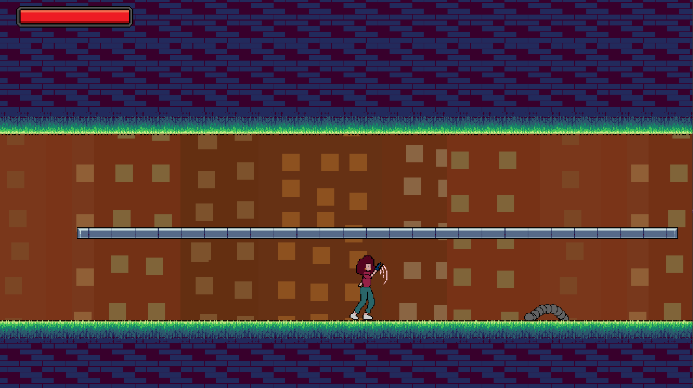
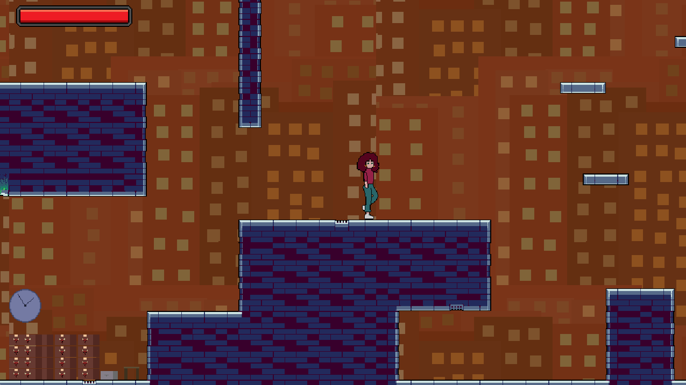
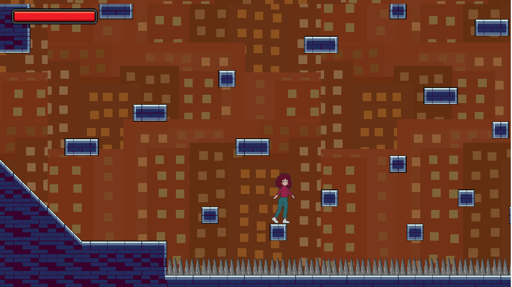
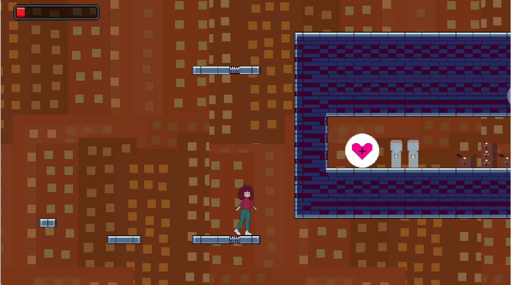
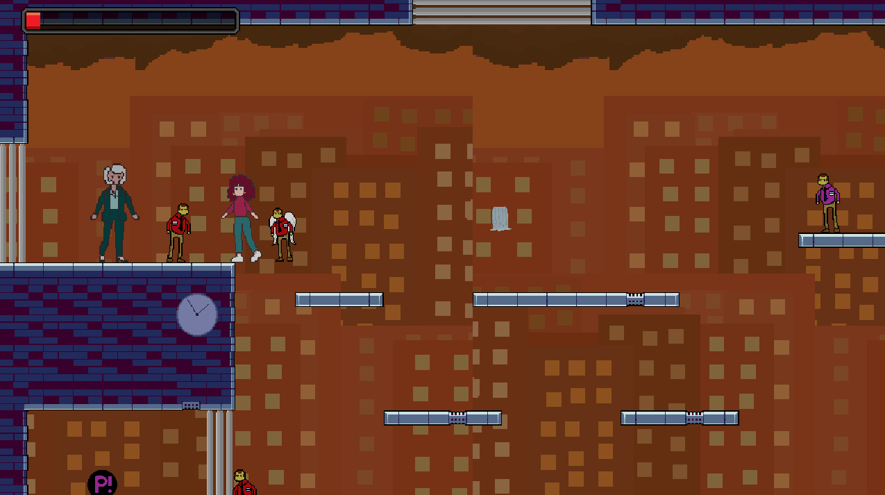

2024 Q1 · Level Designer / Gameplay Scripter
Work Like Hell
A GameMaker team project where I designed the first area, placed enemies and paths, and implemented the first boss fight.
Project overview
Work Like Hell was a group project made in GameMaker by a small team. My contribution focused on the first playable area and its gameplay pacing.
My contribution
- Designed the tile placement and map layout for the entire first area.
- Placed enemies and authored pathing for encounters.
- Implemented the first boss fight.
- Balanced the early area layout to introduce hazards, rooms, secrets, and escalation.
Gallery






